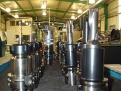
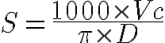

Los operarios de máquinas CNC pueden introducir modificaciones a los programas CNC, los más frecuentes son aquellos relacionados con las condiciones de corte y posición de las herramientas en el almacen. Por ejemplo cuando se cambia de material de partida...
Tipo de fresado.
{kind=link}
Planeado. La aplicación más frecuente de fresado es el planeado que tiene por objetivo conseguir superficies planas. Para el planeado se utilizan generalmente fresas de planear de plaquitas intercambiables de metal duro, existiendo una gama muy variada de diámetros de estas fresas y del número de plaquitas que monta cada fresa. Los fabricantes de plaquitas recomiendan como primera opción el uso de plaquitas redondas o con ángulos de 45º como alternativa.
Fresado en escuadra. El fresado en escuadra es una variante del planeado que consiste en dejar escalones perpendiculares en la pieza que se mecaniza. Para ello se utilizan plaquitas cuadradas situadas en el portaherramientas de forma adecuada.
Cubicaje. La operación de cubicaje es muy común en fresadoras verticales u horizontales y consiste en preparar los tarugos de metal u otro material como mármol o granito en las dimensiones cúbicas adecuadas para operaciones posteriores. Este fresado también se realiza con fresas de planear de plaquitas intercambiables.
Corte. Una de las operaciones iniciales de mecanizado que hay que realizar consiste muchas veces en cortar las piezas a la longitud determinada partiendo de barras y perfiles comerciales de una longitud mayor. Para el corte industrial de piezas se utilizan indistintamente sierras de cinta o fresadoras equipadas con fresas cilíndricas de corte. Lo significativo de las fresas de corte es que pueden ser de acero rápido o de metal duro. Se caracterizan por ser muy delgadas (del orden de 3 mm aunque puede variar), tener un diámetro grande y un dentado muy fino. Un ejemplo de las características de una fresa de corte sería el siguiente: diámetro de 200 mm, espesor de 3 mm, diámetro del agujero de 32 mm y 128 dientes: Fina 128, Gruesa 64.
 Ranurado recto. Para el fresado de ranuras rectas se utilizan generalmente fresas cilíndricas con la anchura de la ranura y a menudo, para aumentar la producción, se montan varias fresas en el eje portafresas permitiendo aumentar la productividad de mecanizado. Al montaje de varias fresas cilíndricas se le denomina tren de fresas o fresas compuestas. Las fresas cilíndricas se caracterizan por tener tres aristas de corte: la frontal y las dos laterales. En la mayoría de aplicaciones se utilizan fresas de acero rápido ya que las de metal duro son muy caras y por lo tanto solo se emplean en producciones muy grandes
{kind=link}
Ranurado de forma. Se utilizan fresas de la forma adecuada a la ranura, que puede ser en forma de T, de cola de milano, etc.
Ranurado de chaveteros. Se utilizan fresas cilíndricas con mango, conocidas en el argot como bailarinas, que pueden cortar tanto en dirección perpendicular a su eje como paralela a este.
Copiado. Para el fresado en copiado se utilizan fresas con el perfil de plaquita redondo a fin de poder realizar operaciones de mecanizado en orografías y perfiles de caras cambiantes. Existen dos tipos de fresas de copiar: las de perfil de media bola y las de canto redondo o tóricas.
Fresado de cavidades. En este tipo de operaciones se aconseja realizar un taladro previo y a partir del mismo y con fresas adecuadas abordar el mecanizado de la cavidad teniendo en cuenta que los radios de la cavidad deben ser al menos un 15% superior al radio de la fresa.
Torno-fresado Este tipo de mecanizado utiliza la interpolación circular en fresadoras de control numérico y sirve tanto para el torneado de agujeros de precisión como para el torneado exterior. El proceso combina la rotación de la pieza y de la herramienta de fresar siendo posible conseguir una superficie cilíndrica. Esta superficie puede ser concéntrica respecto a la línea central de rotación de la pieza, o puede ser excéntrica si se desplaza el fresado hacia arriba o hacia abajo. Con el desplazamiento axial es posible alcanzar la longitud requerida.
Fresado de roscas. El fresado de roscas requiere una fresadora capaz de realizar interpolación helicoidal simultánea en dos grados de libertad: la rotación de la pieza respecto al eje de la hélice de la rosca y la traslación de la pieza en la dirección de dicho eje.
Fresado frontal. Consiste en el fresado que se realiza con fresas helicoidales cilíndricas que atacan frontalmente la operación de fresado. En las fresadoras de control numérico se utilizan cada vez más fresas de metal duro totalmente integrales que permiten trabajar a velocidades muy altas.
Fresado de engranajes. El fresado de engranajes apenas se realiza ya en fresadoras universales mediante el plato divisor, sino que se hacen en máquinas especiales llamadas talladoras de engranajes y con el uso de fresas especiales del módulo de diente adecuado.
Taladrado, escariado y mandrinado. Estas operaciones se realizan habitualmente en las fresadoras de control numérico dotadas de un almacén de herramientas y utilizando las herramientas adecuadas para cada caso.
Mortajado. Consiste en mecanizar chaveteros en los agujeros, para lo cual se utilizan brochadoras o bien un accesorio especial que se acopla al cabezal de las fresadoras universales y transforma el movimiento de rotación en un movimiento vertical alternativo.
Fresado en rampa. Es un tipo de fresado habitual en el mecanizado de moldes que se realiza bien con fresadoras copiadoras o bien con fresas de control numérico.
-
Avance por vuelta avance . Es el desplazamiento longitudinal de la pieza mientras la herramienta (fresa) gira una vuelta completa. Se mide en milímetros por revolución (mm/v), representándose por avance.
-
Avance por diente az. Cuando la fresa gira y está avanzando a lo largo de la pieza, los dientes de la fresa entrarán y saldrán del corte generando viruta . El avance por diente es la distancia lineal recorrida por la herramienta durante el corte de un diente. Este es un factor clave en las aplicaciones de las fresas, y es esencial para hacerlo correctamente. Las recomendaciones de datos de corte incluyen valores para este avance.
- Avance por minuto am. S e llama así al desplazamiento rectilíneo de la pieza en un minuto. Se expresa en milímetros por minuto (mm/min).
Las formulas:
|
 |
S: r.p.m.
D: diámetro de pieza o hta en mm
|
| F= Fz x z x S |
Fmin: avance en mm/min Fz: Avance por diente (mm/z) Z: nº de dientes, filos, plaquitas S: r.p.m. |
| Fn = Fz x z |
Fn: Avance por vuelta, revolución (mm/v) Fz: avance por diente (mm/z) Z: nº de dientes, filos, plaquitas |